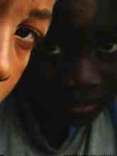

REVISTA TRANSVERSOS · UERJ
Oxalá cresçam pitangas: o documentário na história do cinema em Angola
LER ↗
Realização — Kiluanje Liberdade, Ondjaki
Argumento — Kiluanje Liberdade, Ondjaki
Produção — Kiluanje Liberdade, Ondjaki
Montagem — Maria Joana
País — Angola
Ano — 2006
Duração — 62 min
Filmagens — LuandaFilming — LuandaOpnames — Luanda
Trinta anos depois da independência e três anos depois do fim da guerra, Luanda é uma cidade onde se cruzam pessoas vindas de todas as províncias de Angola. Através de dez personagens, o documentário acompanha diferentes maneiras de viver, sobreviver, imaginar e interpretar uma metrópole em transformação permanente.
Thirty years after independence and three years after the end of the war, Luanda is a city where people from every province of Angola meet. Through ten characters, the documentary follows different ways of living, surviving, imagining and interpreting a metropolis in constant transformation.
Dertig jaar na de onafhankelijkheid en drie jaar na het einde van de oorlog is Luanda een stad waar mensen uit alle provincies van Angola samenkomen. Via tien personages volgt de documentaire verschillende manieren om een voortdurend veranderende metropool te beleven en te interpreteren.
Oxalá Cresçam Pitangas nasce nos primeiros anos de paz em Angola, depois do fim da guerra civil em 2002. O filme observa Luanda a partir das pessoas que a habitam, deixando que as suas vozes revelem as tensões entre memória, sobrevivência, transformação urbana, criatividade e expectativa de futuro.
Oxalá Cresçam Pitangas was made during Angola's first years of peace after the civil war ended in 2002. The film observes Luanda through its inhabitants, allowing their voices to reveal tensions between memory, survival, urban transformation, creativity and expectations for the future.
Oxalá Cresçam Pitangas ontstond tijdens de eerste vredesjaren in Angola na het einde van de burgeroorlog in 2002. De film bekijkt Luanda via haar inwoners en hun stemmen over herinnering, overleven, stedelijke verandering, creativiteit en toekomstverwachtingen.
O título retoma uma expressão associada à esperança e ao desejo de futuro. Ao invés de construir um retrato totalizante da capital angolana, o filme aproxima-se de Luanda através de experiências individuais, da oralidade e dos ritmos quotidianos. A cidade surge simultaneamente como espaço físico, memória e invenção coletiva.
The title evokes hope and a desire for the future. Rather than constructing a totalising portrait of Angola's capital, the film approaches Luanda through individual experiences, oral testimony and everyday rhythms. The city emerges simultaneously as physical space, memory and collective invention.
De titel roept hoop en toekomstverlangen op. In plaats van een totaalbeeld van de Angolese hoofdstad te construeren, benadert de film Luanda via individuele ervaringen, mondelinge getuigenissen en dagelijkse ritmes.
Prémio Nacional de Cultura e Artes de Angola · 2015
Seleção Oficial · Luxor African Film Festival · Egito · 2015
Melhor Documentário · Festival Internacional dos Camarões · 2016
Exibição televisiva · RTP